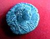
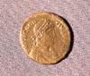

|
C A R R A N Q U E |
|||||||
|
El yacimiento arqueológico se sitúa en el término municipal de Carranque (Toledo) y se extiende a ambas orillas del río Guadarrama, entre dos vaguadas laterales y un camino que se le conoce con el nombre de calzadilla, que actualmente es una vía agropecuaria y era una antigua calzada romana. Este complejo se encontraría próximo a la mítica y buscada ciudad de Titulcia, mencionada en la Geografía de Ptolomeo, el Itinerario de Antonio y el Anónimo de Rabena; localizada en la calzada que descendía desde la Meseta Norte, pasando por enclaves como Coca (Segovia), y que desde Titulcia se dirigía al este en dirección a Cesaraugusta (Zaragoza).
En el verano de 1983, Samuel López Iglesias descubrió, mientras realizaba labores agrícolas en el paraje conocido como las Suertes de abajo, uno de los mosaicos que forman parte de la bellísima y única Villa de Materno. Desde el descubrimiento se han desarrollado excavaciones arqueológicas ininterrumpidamente, que han sacado a la luz un complejo formado por edificios bajo imperiales de finales del siglo IV, a ambos lados del río Guadarrama. A través de la cartela del dormitorio principal de la Villa, que menciona a Materno, y otros restos hallados, permiten a los arqueólogos trabajar en la hipótesis de que el dueño del conjunto fuera Materno Cinegio, pariente y colaborador del emperador hispano Teodosio I el Grande, el último emperador Romano.
|
|||||||
|
  |
|||||||
|
346-395,
emperador romano de Oriente (379-395) y de Occidente (394-395), el último
gobernante que dirigió un Imperio romano unido. Teodosio nació en Cauca
(actual Coca, Segovia), hijo del general romano Flavio
Teodosio (conocido como Teodosio el Viejo). De joven acompañó a su padre
en sus campañas de Britania; al morir éste se retiró a Hispania. Cuando
Flavio Valente, el Emperador romano de Oriente, murió luchando contra los
visigodos en Adrianópolis en el 378, el Emperador romano de Occidente,
Flavio Graciano, nombró a Teodosio para sustituirle y éste fue coronado el
año siguiente. En el 382, tras numerosas escaramuzas,
Teodosio negoció con los Godos un tratado de paz favorable, que les
permitía residir en el territorio Imperial a condición de que sirvieran en
su Ejército. Después de morir asesinado Graciano en el 383, Teodosio
reconoció al usurpador, Magno Clemente Máximo, como emperador de
Occidente, a excepción de Italia, donde Valentiniano II continuó como
sucesor legal de Graciano. Cuando Máximo invadió Italia en el 388,
Teodosio lo derrotó, y restituyó a Valentiniano como emperador romano de
Occidente.
Teodosio fue defensor del cristianismo
dogmático; persiguió a los arrianos y desalentó la práctica de la vieja
religión pagana romana, a veces de forma violenta: en el 390 ordenó la
masacre de 7.000 ciudadanos insurrectos de Tesalónica (Grecia), y fue
excomulgado el obispo Ambrosio de Milán. En el 392 Valentiniano fue
asesinado por Arbogasto, general de Teodosio, y le sucedió Eugenio, aunque
como dirigente títere. De nuevo Teodosio fue a Italia, donde derrotó a
Arbogasto y a Eugenio en septiembre del 394. Durante los cuatro meses
siguientes gobernó Oriente y Occidente conjuntamente. El 17 de enero del
395, tras su muerte en Milán, le sucedieron sus hijos, Arcadio en Oriente
y Honorio en Occidente. Arcadio gobernó en un principio bajo la breve
regencia de Flavio Rufino y Honorio bajo la del general Flavio Estilicón.
|